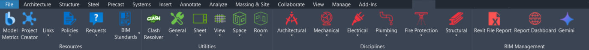

← Back to portfolio
Professional · Revit add-in
CNCPT Ribbon
A single Revit add-in that consolidates the tools, standards links, and automation Clark Nexsen's design teams use daily — from clash resolution and sheet automation to discipline-specific tools for architecture, mechanical, electrical, and BIM management.
Explore
The ribbon, interactive
Click any button on the ribbon below. Pulldowns open a tool list — click a tool to read what it does. 70 tools total: 22 in Resources, 22 in Utilities, 23 across Disciplines, and 3 in BIM Management (visible only to whitelisted users).

Artifacts
Files & deliverables
The source and full toolbar documentation, hosted in the repository.